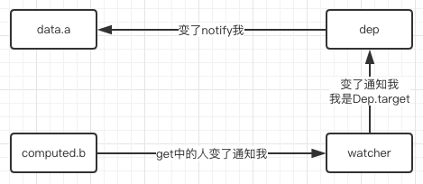

Vue依赖收集与更新
实例
先出个小题，你是否能准确、清晰地判断出，下边代码，doTest方法中所有`console.log`的打印结果呢？
// 模版结构：
// <div :data-str="dateStr" id="test">
// </div>
var vm = new Vue({
el: '#test',
data() {
return {
info: {
year: '2018',
month: '12'
}
}
},
computed: {
dateStr: function () {
return `${this.info.year}-${this.info.month}-${this.info.date}`
}
},
methods: {
getStr() {
return `${this.dateStr}/${document.getElementById('test').getAttribute('data-str')}`
},
waitNextTick() {
return new Promise((resolve) => {
this.$nextTick(function(){
resolve()
})
})
},
async doTest() {
console.log(this.getStr())
this.info.date = '5'
console.log(this.getStr())
await this.waitNextTick()
console.log(this.getStr())
this.$set(this.info, 'date', '6')
await this.waitNextTick()
console.log(this.getStr())
this.info.year = '2019'
console.log(this.getStr())
await this.waitNextTick()
console.log(this.getStr())
this.info.date = '7'
this.info = Object.assign({}, this.info)
console.log(this.getStr())
await this.waitNextTick()
console.log(this.getStr())
}
},
mounted() {
this.doTest()
}
})
依赖收集
如上图，以data中的a属性与computed中的b属性的为例，b属性的方法会映射为其对应的getter，在执行该方法时
- `Dep.target`指向
b属性的watcher - 依次调用方法中相关属性（
a）的getter，通过每个getter把`Dep.target`加入到自己的依赖队列中 - 相关属性（
a）值发送变化时，会通知（notify）依赖队列中的所有watcher
从上图可以看出，notify后，相关的计算属性并不是马上执行对应的计算方法（此处以异步更新为例），而是将dirty设置为true，以此标识依赖有变。
当然，在首次初始化的时候，dirty的默认值也是true。如此，渲染初始化界面时，会需要马上用到该计算属性，引发计算方法的执行。
- 依赖变了，computed不一定会执行，也不一定会马上执行
- 啥时候和会不会执行，取决于会不会和啥时候被使用到（即getter被调用到）
- 而
Vue中的watch是没方法实现类似的按需计算的，这也是两者性能上的区别
使用场景
- 计算属性如果没使用到（即getter未被调用），那就完全不会执行
- 计算属性如果被使用到（即getter被调用到），计算方法会马上执行，值被更新
如果是在模版中被用到，那么出于dom更新的性能优化原因，其流程分为两个步骤
- 依赖的属性修改后，
dirty设置为true，标识下次使用计算属性变量，需要重新计算 - 在下一个tick中，重新计算，并更新界面
疑问解答
async doTest() {
console.log(this.getStr()) // 打印：2018-12-undefined/2018-12-undefined
this.info.date = '5' // 依赖收集已完成，新增的属性并不在observer跟踪范围内，其改动，无法引发计算属性变量值的更新
console.log(this.getStr()) // 打印：2018-12-undefined/2018-12-undefined
await this.waitNextTick()
console.log(this.getStr()) // 打印：2018-12-undefined/2018-12-undefined
this.$set(this.info, 'date', '6') // 依赖收集已完成，新增的属性并不在observer跟踪范围内，其改动，无法引发计算属性变量值的更新
await this.waitNextTick()
console.log(this.getStr()) // 打印：2018-12-undefined/2018-12-undefined
this.info.year = '2019' // 1.year是参与了依赖收集的，其变化会引发计算属性变量值的更新；2.之前的date值变化虽然没引起计算属性变量重新计算，但是date自身的值变化却是实打实的
console.log(this.getStr()) // 打印：2018-12-6/2018-12-undefined，dirty为true，一旦使用到，会马上进行计算，以保证计算属性变量的值是最新的
await this.waitNextTick()
console.log(this.getStr()) // 打印：2018-12-6/2018-12-6，出于性能考虑，view会在下一个tick集中更新，这一次其会使用到上次新计算出来的计算属性变量的新值来更新dom
this.info.date = '7'
this.info = Object.assign({}, this.info) // info是参与了依赖收集的，其变化会引发计算属性变量值的更新，所以对于依赖收集以后的新增属性，可以考虑采用该方式来修改，以触发计算属性变量更新
console.log(this.getStr()) // 打印：2018-12-7/2018-12-6
await this.waitNextTick() // 出于性能考虑，view会在下一个tick集中更新，这一次其会使用到上次新计算出来的计算属性变量的新值来更新dom
console.log(this.getStr()) // 打印：2018-12-7/2018-12-7
}
拓展
- https://www.jianshu.com/p/d95a7b8afa06
- https://github.com/answershuto/learnVue